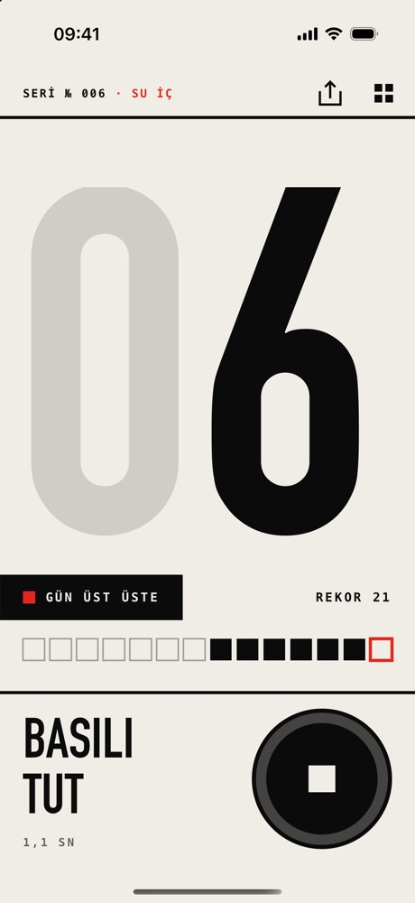
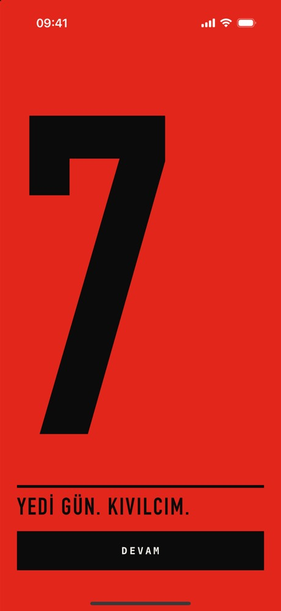
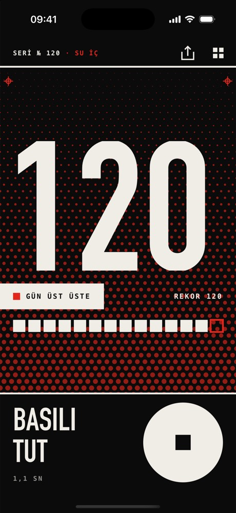

Tek düğme.Tek zincir.
Bir alışkanlığı her gün tek dokunuşla işaretle, zincirin uzadığını gör.
Haberdar ol
İlk sürüm hazır olunca bir kez yazarız.
Tek ekran
Büyük bir sayı ve tek bir "Bugün yaptım" düğmesi.
Zincir
Kaç gündür üst üste yaptığın her zaman görünür; gerekirse geri alabilirsin.
Geçmiş
Son haftalarını takvimde bir bakışta gör.
Basılı
tut
Prototipte bugünü işaretlemek için düğmeyi 1,1 saniye basılı tutuyorsun.
Prototipten ekranlar



Prototip · örnek veri
Bu bir prototiptir; uygulama geliştiriliyor. Ekran görüntüleri ve video örnek veriyle hazırlandı.
Haberdar ol
İlk sürüm hazır olunca bir kez yazarız.
E-postan yalnızca ilk sürüm haberi için, açık rızanla işlenir ve istediğin zaman silinmesini isteyebilirsin (aydınlatma metni).